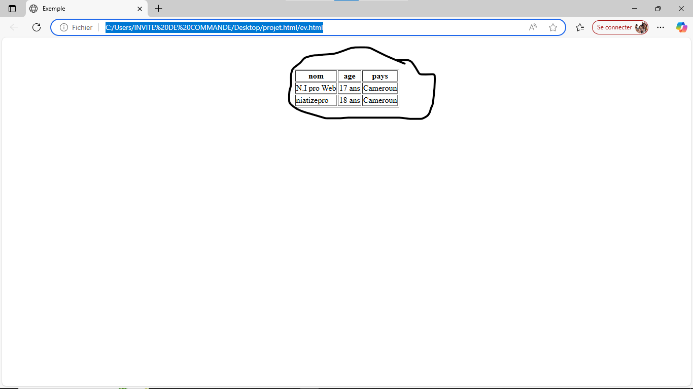
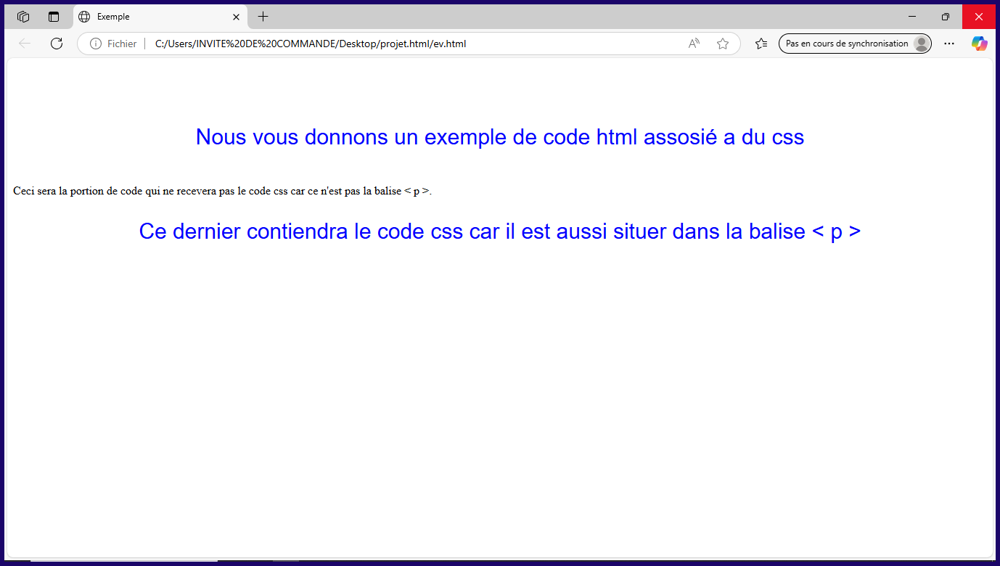

GENERALITE SUR LE LANGUAGE DU HTML
Tout d'abord le HTML (Hypertex Markup LANGUAGE) qui signifie language de conception des liens hypertxte est un language de description et de conception utilisé pour structuré une page web statique( page web avec contenue fixe qui ne fait pas de mise a jour). Pour un site web statique,il ne suffit pas seulement de programmer en html c'est le pourquoi que au cour de notre aprentissage, nous allons utiliser les feuilles de styles CSS et JAVASCRIPT pour mieux styler nos pages webs. Suivez nous sans sauter de partie et vous verez votre evolution.
MATERIELS ET LOGICIELS UTILE POUR LA CONTRACEPTION D'UNE PAGE WEB
pour commencer a programmer en html, vous pouvez avoir un telephone ou un ordinateur de préfference car un tellephone ne peux pas
lier des feuilles de style. Nous meme avons debuter sur tellephonne avant de se perfectionner sur le PC
(Personnal Computer). Comme nous le dision si vous avez deja un materiel de Developpement(de conception des pages)
,il ne vous manquera plus que un logiciel de programmation ou d'un IDE(INtagrated Developpement Environment)
comme visual studio code sur pc et nous vous conseillons CODE STUDIO sur un tellephonne.
Une fois en position de ces materiel,vous pouvez commencer la programmation. Il faut noter
que un fichier html se crée toujour avec l'instension .html et il faudra noter aussi
que les TAGS
ou balises sont des instructions donner a un naviguateur et sont toujour representé par le symbole <>
pour representer l'ouverture d'une balise et le symbole < / > pour la fermeture des balises fermables.
Pour crée un nouveau fichier ou dossier sur visual studio code,vous pouvez faire nettement comme cette video:
- Structure minimale
- balises de mise en forme ou balises de base
- Les balises de liste
- Les fichiers miltimedias
- utilisation des tableaux
- La balise < table border="n">< / table > qui servira a definir un tableau. L'attibus border sert a specifier le nombre de bordure(n) que comporte ce tableau .
- La balise < th > < / th > qui sert a definir l'entete du tableau .
- La balise < tr > < / tr > qui sert a definir une ligne du tableau.
- La balise < td >< / td > qui sert a definir des colones sur des lignes d'un tableau.
- Les formulaires
- les < input >
- les < textarea >
- les < select > (nous vous avons deja montrer).
- Les inputs Ils prennent plusieurs attibus parmis lesquels:
- type (il en existe plusieur parmis lesquelles)
- name attribus un nom logique au champs
- value ser a attibuer une valeur ou un text par defaut d'un champs de saisis
- size pour la taille de la boite de saisis
- la balise textarea Elle permet de definir une zone de saisie plus vaste par rapport a la simple ligne de saisie de la balise input. Cette balise possede deux attibus pour ogmenter ou reduire sa taille:
- cols Represente le nombre de caractere que peux contenir une ligne.
- rows qui est le nombre de lidge de cette balise .

Comme nous vous avons dis,voius pouver constater que les ecritures sont a l'interieure des balises representer par les syboles "< >"et "< / >". La balise < html > sert a definir le debut de la page web et sa fermeture represnté comme ceci < / html > sert a marquer la fin de la page web,la balise < head >sert a montrer le debut de l'entete et la fin de l'entète est marqué par < /head > . La troisième partie ( body) sert a definir le contenue de la page web où sera ouvert la plus grande partie des balises . En definitif, les balises se definissent toujour par le syboles < > et < / > pour les fermeture.
Pour crée un paragraphe, nous utilisons la balise < p >...< / p >;pour ecrire un titre,nous utilisons la balise < h1 >...< / h1 >;pour aller a la ligne,nous utilisons la balise < br > ;pour ecrire un texte en ilalique,on utilise la balise < i >...< / i >;pour metre un texte en gras,on utilise la balise < b >... < / b > ;pour souligner un texte, on utilise la balise < u >...< / u >.En executant le code suivant,vous verez la mise en page d'une pade:
< head >
< meta charset="UTF-8" >
< title >Exemple< / title >
< h1 >
< u >
< i >Ceci est un exemple de mise en page Web < / i >
< / u >
< / h1 >
< p > Ceci est un exemple de mise en page web pour < br >
l'aprentissage.'< / p >
< / head >
< / html >

Une fois obtenue le resultat de cet image,vous pouver continuer votre apprentissage.
L'orsque vous fète une programmation,dans le but de structurer votre contenue,vous serez obliger de faire appellé a utiliser des balises
de listes comme vous le voyer sur cette page .
pour faire une liste numeroté(representé par des chiffres),vous allez utiliser la balise < ol>...< / ol >
pour faire une liste non numeroté(represnté par des points),vous allez utiliser la balise < ul >...< / ul >
pour definir les element qui seronts a l'interieur de vos listes,vous utiliser la balise < li >...< / li >
si vous vouler faire une liste qu'on doit cliquer dessus pour choisir un element, vous devez utiliser la balise < selec t>...< /select >
et y ajouter a l'interieur les balise < option >....< / option > pour y ajouter des element de la liste de selection.La syntaxe de ce
dernier est un peu complexe mais voici sa syntaxe ou sa formule:
< option > option 1< / option >
< option > option 2< / option >
< option > option....< / option >
< option > option n< / option > < / select >
Comme exemple pour les balises de listes,nous vous proposons le code suivant que vous pouvez modifier par vos propres valeurs:
< ol > < li >nous nous appelons N.I PRO WEB < / li >
< ul > < li >contactez nous au 678059118< / li >
via telegramme
ou contactez nous au < li >621766659< / li >
via whatsap
< / ul > < li > Nous somme entrein de consevoir un site web < / ol >
pour les listes de selections: < select >
< option > option 1< / option >
< option > option 2< / option >
< option > option....< / option >
< option > option n< / option > < / select >
Apres execution du code ci-dessus,vous aurez le resultat ci-dessous.

- Les fichiers images:
pour inserer des images dans un site comme vous nous voyer faire depuis pour vous montrer l'exemple,nous utilisins la balise < img src="" alt="" >.le src permet de definir l'adresse de la source de l'image.C'est encore le chemin d'acces vers le fichier image ou les autres fichiers. Le alt permet de metre un text sur l'image avant que le fichier ne soi telechargé. - Les fichiers videos:
Tout comme les images,pour inserer des videos dans un site nous utilisins la balise < video src=""> < / video >. le src permet de definir l'adresse de la source de la video.C'est encore le chemin d'acces vers le fichier video ou les autres fichiers. l'attibus controls permet de merte les boutons de controles vocales
- Pour les fichiers audio:
pour inserer des sons dans un site ,nous utilisons la balise < audio src="" controls >< / audio >. le src permet de definir l'adresse de la source de la musique. C'est encore le chemin d'acces vers le fichier audio ou les autres fichiers. l'attibus controls permet de merte les boutons de controles vocales
C'est un ensemble de lignes et de colonnes qui forment un tableau.
Pour construire un tableau,nous aurons besoin de:
Les tableaux sonts souvant très dificiles a manipuler et c'est le pourcela que je vais vous demander de bien vous exercer dessus et nous vous conceillons de retenir que les balises < td > se mette toujour dans les < tr >.
Affin de vous apporter plus de lumière,voici le code d'un tableau avec son appercus:
< tr >
< th >nom< /th >
< th >age< / th >
< th >pays< / th >
< / tr >
< tr >
< td >N.I pro Web< / td >
< td >17 ans< / td >
< td >Cameroun< / td >
< / tr >
< tr >
< td >niatizepro< / td >
< td >18 ans< / td >
< td >Cameroun< / td >
< / tr >
< / table >
Apres avoir executé ce code, nous croyons que le resultat ci-dessous pourra vous faire comprendre.

nous alons un peut tricher en vous donnant une propriété permettant de centrer quelques element. Pour ce faire,dans toute les balises ouvertes dont vous voulez centre, inserer juste a l'interieur l'attibus align="center". pour un exempe, vouici le meme tableau proposer qui a été centré.

Un formulaire est un champ de saisis permettant l'interaction avec la page web. ce dernier commence par la balise < form action="" > < / form> . La valeur de l'atribus action permet de definir le nom de la page web qui vas traitter ses informations.
Cette balise est un peut particulière car a l'interieur de lui, nous pouvons y inserer toute les balises html mais in est sourtout inter essant d'inserer les balises interatif html
Parmis ces balises, nous avons:
- text(pour un champ de saisis d'un text)
- password (champ de saisis d'un mots de pass)
- checkbox(boite a cocher )
- submit(boutons d'envoie)
- reset(remise a zero)
La syntaxe generale de cette balise est: < textarea cols=" le nombre de caractere" rows="le nombre de ligne" > text< / textarea >
Les liens
En html, si vous voulez crée un site web (ensembles de pages webs liés entres eux par des liens hypertxte),vous avez la possibilité
de metre les liens qui mennerons vers une autre page web. Pour ce faire,on utilise les balises < a > avec un attibus (href) pour refe
rentier la page web qui suivra apres avoir cliquer sur ce lien. la syntaxe de cette balise est la suivante:
< / a >
Les balises semantiques
- les balises d'entetes: L'ors de la creation d'une page web,vous pouvez definir l'entete de la page web grace a la balise < header >. Sa syntaxe est:
- les pieds de pages Encore appellé < footer > , cette balise sert a definir un pied de page . Sa syntaxe est:
- Les listes de navigations encore appellé < nav >, cette balise permet de definir une liste de navigation. Une liste de navigation permet de dire a un navigateur que les elements qui la constitues sont des liens hypertextes. La syntaxe generale pour cette balise est :
ce dernier est ouvert et fermé entre la fermeture de la balise head et avant l'ouverture de la balise body .
ce dernier est ouvert apres la fermeture de la balse body
< a href="lien1.html" >texte du lien< / a >
< a href="lien1.html">texte du lien< / a >
< a href="lien1.html" >texte du lien< / a >
< / nav >
pour cette balise,vous dever remplacer le lien1.html par le chemin d'acces dont vous aurez copié soit d'un site en ligne, soit d'un site sur votre pc ou votre en ligne.
CONCLUSION DU HTML
INITIATION AUX FEUILLES DE STYLE CSS :
Generalités
-
CSS (Cascading Style Sheet),est un language permettant la mise en forme des pages
webs car ils permettes de styler ce dernier (manipuler les couleurs,metre des animations,métriser des dimensions ...).
- Utilisation des feuilles de style Dans un document html,on peut inserer le code css :
feuilles de style est une portion d'un document html qui permet la mise en forme totale ou partiel d'un document.
-dans la balise html sous forme d'attribus: sa syntaxe est ci-dessous:
Exemple: < p style="color: green;" >< / p >
-dans l'entete du document html : entre les balises
< style type="text/css" > saisir le code css< /style >
-dans un fichier de style externe: ce fichier externe doit etre enregistrer avec l'instension .css pour prendre en charge les propriété css. Ici, on utilisera la syntaxe générale qui est:
< p align="center">Nous vous donnons un exemple de code html assosié a du css< / p >
< span align="center" >Ceci sera la portion de code qui ne recevera pas le code css car ce n'est pas la balise < p >.< / span >
< p align="center">Ce dernier contiendra le code css car il est aussi situer dans la balise < p >
p{color:blue;
font-size: 30px;
font-family:helvetica}
Ce resultat est celui de la portion de code html et css qui vous a été donné un peut plus haut.
CONCLUSION SUR LE CSS
En definitive, le css (cascading style sheet) est un language en programmation qui permet de styler les pages webs.
nous pouvons vous sertifier que ce programme proposer par NI pro web n'est pas complet donc a la suite nous allons vous donner
quelques sites web a realiser sous forme d'exercice. Si vous avez des difficulté a le faire, contacter nous aus 6 78 05 91 18
via telegramme ou au 6 21 76 66 59 via whatsapp. Nous pouvons également vous aprendre d'autres l'anguages associable
avec le html comme le javascript le php et bien d'autres si vous nous contactez.
EXERCICE
pour exercice, tout d'abord, essayer de realiser les photo presest dans cette page et ensuite,realiser les videos présent si dessous.
N.B contacter nous au 6 21 76 66 59 via whatsapp ou au 6 78 05 91 18 via telegramme.